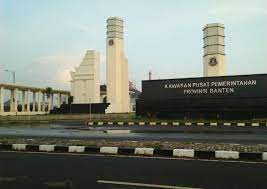
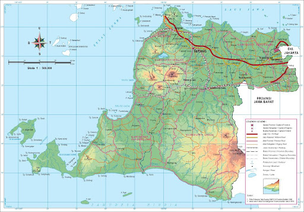

Sejarah

Banten memiliki sejarah panjang sebagai pusat pemerintahan yang penting pada masa lalu.
Pada abad ke-16, Banten menjadi pusat Kesultanan Banten yang berpengaruh.
Kemudian, pada abad ke-17, VOC (Vereenigde Oost-Indische Compagnie) Belanda mendominasi wilayah ini.
Banten kemudian menjadi bagian dari Hindia Belanda sebelum akhirnya memperoleh status provinsi
di Indonesia setelah kemerdekaan.
Geografis

Provinsi Banten terletak di pesisir barat Pulau Jawa dan memiliki beragam lanskap,
termasuk pegunungan, dataran rendah, serta pantai yang indah. Wilayah ini memiliki iklim
tropis dengan dua musim, yaitu musim hujan dan musim kemarau.
Wisata
Banten menawarkan berbagai destinasi wisata menarik. Pantai Anyer, Carita, dan Sawarna menjadi tujuan
favorit wisatawan yang mencari keindahan pantai. Selain itu, terdapat juga situs sejarah seperti
Benteng Speelwijk dan Masjid Agung Banten yang mencerminkan warisan budaya provinsi ini.
Masjid Agung Banten

Masjid Agung Banten adalah salah satu tempat wisata religi dan
sejarah yang berlokasi di Kota Serang, Banten. Masjid ini dibangun
pada tahun 1566 oleh Sultan Hasanudin, anak dari Sunan Gunung Jati.
Masjid ini memiliki ciri khusus berupa menara yang berbentuk seperti
mercusuar dengan atap bertumpuk lima seperti pagoda Cina. Menara ini
berfungsi sebagai menara pandang dan gudang senjata pada masa
Kesultanan Banten. Menara ini juga menjadi simbol dan ikon Provinsi
Banten. Di sekitar masjid, terdapat kompleks pemakaman para sultan
dan kerabat Banten, serta puing-puing benteng Keraton Surosowan.
Masjid Agung Banten menawarkan pesona keindahan, kekayaan budaya,
dan nilai sejarah yang menarik untuk dikunjungi.
Taman Nasional Ujung Kulon

Taman Nasional Ujung Kulon merupakan cagar alam yang terkenal di Banten. Taman ini menjadi tempat
perlindungan bagi spesies langka seperti badak Jawa. Ujung Kulon juga memiliki keindahan alam yang
menakjubkan, termasuk hutan hujan tropis, pantai berpasir putih, dan keanekaragaman hayati laut.